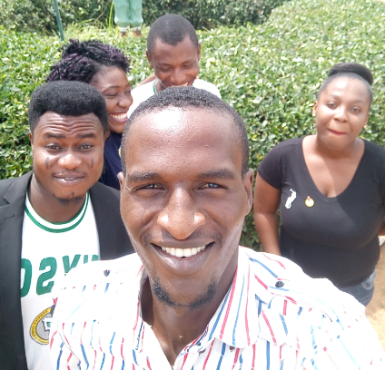

- Bachelor of Engineering [B.Eng. Mechanical Engineering (Option in Mechatronics) Second Class Division ] [2011-2016]
- Senior Secondary School Certificate [2002-2005]
- Primary School Leaving Certificate [1996-2002]
PROFESSIONAL CERTIFICATES OBTAINED WITH DATES
Awarding body: British International Safety Organization
- Award in Health and Safety at Work (HSE level 1 - Distinction) [6th July 2017]
- Award in Risk Assessment Practical Application (HSE level 2 - Credit) [6th July 2017]
- Award in Environmental Awareness (HSE level 3 - Credit) 6th July 2017]
WORK EXPERIENCE WITH DATES
Mol Quarry: [November, 2017 � March, 2018]
Position: Project Engineer Assistant
Responsibilities:
- Involved in installation of conveyor tracks.
- Assisted in Installation of Jaw and Cone crushers.
- Much experience was gained in using engineering tools and equipment such as drilling and grinding machine.
- Assisted in creating purchase order of some engineering materials needed.
- Assisted in carrying out basic welding operation.
- Deeply rooted in crusher working principles and repairs.
Community Secondary School, Ugwogo-Nike Enugu: [February, 2017-October, 2017]
Position: Corps Member
Responsibilities:
- Teaching over 80 students Physics and Mathematics
- I was in-charge of the school Computer laboratory, performed some basics duties such connecting the systems to the internet, and installation of some basic software.
- I was involved in coordinating WAEC and NECO examinations
- I was the games master during my stay in the school, I trained the students in competing for the state�s football competition.
Egbin Power Station Ikorodu, Lagos: [June, 2015-December, 2015]
Position: Maintenance Engineer Intern
Responsibilities:
- I was involved in the servicing of the gas strainer through which the gas was passed to the burners of the boiler, I was able to know that clogs at the strainers would lead to the burners inefficiency.
- I was also involved in the replacement of O-ring of an Automatic Recirculation Control (ARC) Valve, I discovered that the O-ring is a special component of the ARC valve and was made of TFE/propylene. I majorly partook in the cleaning of other parts such as Lever, Pilot pin and Spring
- I was part of the team that fixed the Higher-Pressure heater leakage, of which I was able to learn the steps involved while fixing heater leakages such as soap bubble test, plugging etc.
- I was also part of the team that fixed boiler tube leakages, from the work, I learnt the procedure involved in fixing boiler tube leakages which involved identifying, cutting and replacement leaked tubes through welding.
- I also Partook in the replacement of the compressor of an air conditioning system.
Egbin Power Station Ikorodu, Lagos: [June, 2015-December, 2015]
Position: Procurement Intern
Responsibilities:
- I was involved in Preparing and sending invoices, credit memos, and purchase orders using SAP software.
- I was in charge of processing of company�s receipts, sales invoices, and payment from customers and suppliers.
- I was involved in monitoring the company�s budget.
- I was involved in preparing balance sheets and profit loss statements for the company.
CORE COMPETENCE
- Microsoft packages proficient [Word, excel, Power point, access]
- Computer programming. [Python, MATLAB, HTML, CSS, JavaScript, FORTRAN]
- CAD software [AutoCAD 2D/3D, Autodesk Inventor, Pro-Engineer]
- Project management.
- Plc programming and ladder logic.
- Machine code programming [G-code, M-code].
- Vast in usage of System Application and Product [SAP]
PERSONAL DATA
- Sex: [Male]
- Date of Birth: [12th August, 1995]
- Marital Status: [Single]
- Place of Origin: [Oyo]
- Local Government Area: [Ibadan South-East]
- Nationality: [Nigerian]
- Language spoken: [Yoruba, English, Igbo, Hausa]
LEADERSHIP EXPERIENCE
- Class Captain (Primary 5, JSS1-JSS3) Samwagba Educational Centre, Ore [2001-2005].
- Punctuality Prefect Samwagba Comprehensive College, Ore [2007/2008].
- Head Master Torry and Grace Group of Schools, Ore [2009].
- Group Leader (GNS 101) Federal University of Technology, Akure [2011].
- Corpers� Leader Community Sec. School, Ugwogo-Nike [2017].
AWARDS/ACTIVITIES
- 3rd Overall Best Graduating Student Samwagba Nursery and Primary school, Ore [2001]
- 1st Position 100-meter Junior boys Samwagba Nursery and Primary school, Ore [2000]
- 1st Position 100-meter Junior boys Samwagba Comprehensive College, Ore [2004]
- Recognition for Participation Google Map Maker [2013].
- Best Intern Egbin Power Station [2015]
- Google/Udacity Scholarship Google [2018]
REFEREES:
Mr. John Inaju
Head of Procurement Department
Egbin Power Station
Email: johninaju60@gmail.com
Tel:07033723763
Dr. Olurotimi Akintunde Dahunsi
Lecturer
Federal University of Technology, Akure
Tel:08162539990
Email: oadahunsi@futa.edu.ng
MINI GALLERY

Top